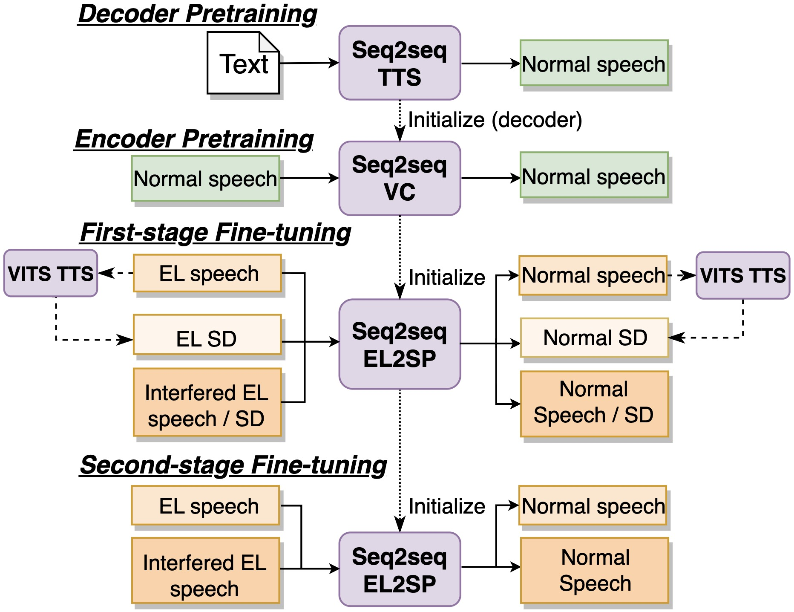

Comments: Submitted to the IEEE Engineering in Medicine and Biology Society (IEEE EMBC).
Abstract: Electrolaryngeal (EL) speech, an artificial speech produced by an exectrolarynx for laryngectomees, lacks essential phonetic features, and differs in temporal structure from normal speech, resulting in poor naturalness and intelligibility. To address this deficiency, sequence-to-sequence (seq2seq) voice conversion (VC) models have been applied in converting EL speech to normal speech (EL2SP), showing some promising performances. However, previous studies mostly focus on converting clean EL speech, thereby restricting the further applicability in real-world scenarios, especially when the EL speech is inevitably interfered with background noise and reverberation. In light of this, we suggest a novel training techniques based on seq2seq VC to enhance the robustness of real-world EL2SP. We first pretrain a normal-to-normal seq2seq VC model based on a text-to-speech (TTS) model. Then, a two-stage fine-tuning are conducted with the environment-specific training data constructed from only a small amount of original clean data available. Several design options are investigated to figure out the effectiveness of our method. The significant improvements presented in experimental results indicate that our method can non-trivially handle both clean and noisy-reverberant EL speech, enhancing the robustness of EL2SP in the real-world scenarios.
Main concept

EL2SP dataset
Source EL data, which is an EL corpus recorded from a laryngectomee; Target normal data, which is a nomral courpus recorded from a healthy speaker.
Two experimental conditions for the evaluation
Clean condition: Convert the clean EL speech to clean target normal speech.
Noisy-Reverberant condition: Convert the noisy-reverberant (NR) EL Speech to clean target normal speech.
Eleven types of speech were evaluated.
Referenced speech:
Source: Clean EL speech (C-EL), NR EL speech (NR-EL).
Target: Clean normal speech (C-SP).
Converted speech from Baseline 1:
Conversion in clean condition: C-B.1
Conversion in NR condition: NR-B.1
Converted speech from Model 1:
Conversion in clean condition: C-M.1
Conversion in NR condition: NR-M.1
Converted speech from Model 2:
Conversion in clean condition: C-M.2
Conversion in NR condition: NR-M.2
Converted speech from Model 3:
Conversion in clean condition: C-M.3
Conversion in NR condition: NR-M.3
Samples
Transcription: 高度は約一万フィートです。 (koudo ha yaku ichiman fu i to de su)
C-EL
NR-EL
C-SP
Reference:
C-B.1
C-M.1
C-M.2
C-M.3
Conversion:
NR-B.1
NR-M.1
NR-M.2
NR-M.3
Conversion:
Transcription: 税関を出たところで受け取れるはずです。 (zeikan wo de ta tokoro de uketo re ru ha zu de su)
C-EL
NR-EL
C-SP
Reference:
C-B.1
C-M.1
C-M.2
C-M.3
Conversion:
NR-B.1
NR-M.1
NR-M.2
NR-M.3
Conversion:
Transcription: 日本の民芸品です。 (nihon no mingeihin de su)
C-EL
NR-EL
C-SP
Reference:
C-B.1
C-M.1
C-M.2
C-M.3
Conversion:
NR-B.1
NR-M.1
NR-M.2
NR-M.3
Conversion:
Transcription: ２０２便をキャンセルしたいのですが。 (ni hya ku ni bin wo kya n se ru shi ta i no de su ga)